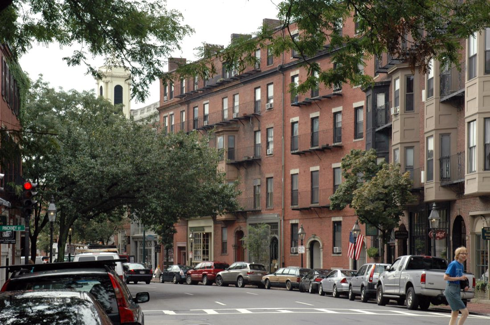
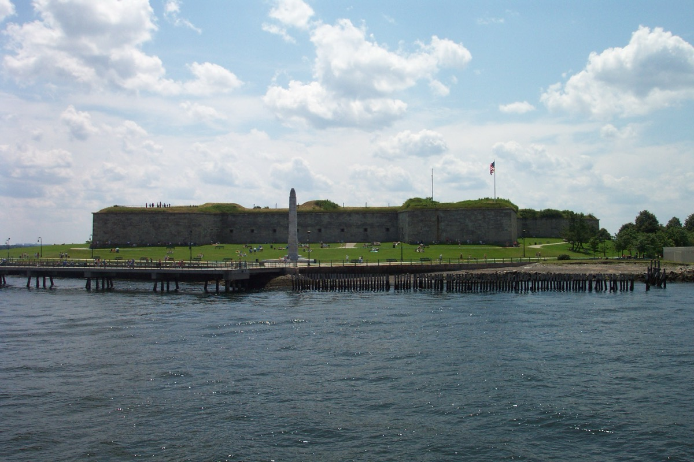
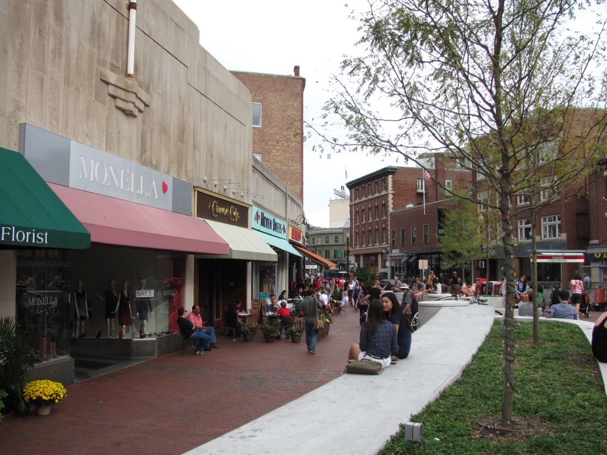
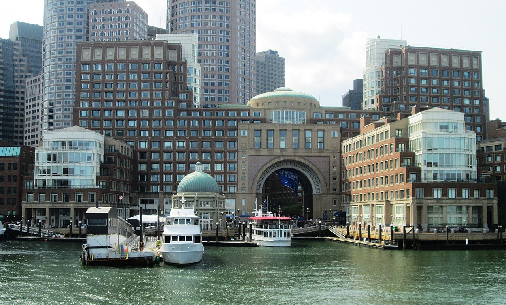

Boston is a low city by American standards. The tallest building is 60 storeys, the historic core is four and five, and for a long time the rooftop bar was a New York thing that the city politely ignored. That changed when the Seaport got built. A flat, formerly empty waterfront district across Fort Point Channel from downtown turned out to be the perfect place to put a bar on a roof, because everything you want to look at, the skyline, the harbor, the Zakim Bridge and the Custom House tower, is on the other side of the water. Most of the best rooftop bars in Boston are now there, and the rest are scattered across Back Bay, South Boston and one cheap, beloved deck in Harvard Square.
This guide covers 12 rooftop bars and decks in Boston and Cambridge, plus one waterfront patio that belongs in the conversation. For each we give the address, the nearest T stop, what you are actually looking at, a rough price tier, the reservation policy and the season, because this is the most important thing to know about rooftops in Boston: most of them close from around October to April. We flag the four that stay open all year.
Hours, cover charges and drink prices change with the season and the weather, so where we are not certain we say so. Check before you go, and check the forecast: a rooftop bar that is open on paper will close its deck in a thunderstorm.
The short answer
Short on time? Start with these 8
01 · Seaport & Fort Point
Seaport and Fort Point rooftops
The Seaport is where Boston's rooftop bars cluster, and for a reason: every one of them faces the skyline across the water. All are within a fifteen-minute walk of South Station, or a couple of Silver Line stops.
Lookout Rooftop and Bar, the Envoy Hotel
Lookout is the rooftop bar everyone in Boston has been to at least once, and the reason is the view. You are on top of a hotel at the mouth of Fort Point Channel, and the whole downtown skyline is laid out in front of you across a few hundred feet of water: the Custom House tower, the financial district, the Zakim Bridge to the left, the harbor to the right. At sunset the glass towers go orange and then the lights come on, and it is the best skyline view you can get with a drink in your hand in this city. The drinks are competent hotel cocktails at hotel prices; nobody comes for them. It is first-come, first-served with no reservations, and on summer weekends there is a line for the elevator by 5pm. Go on a weekday, arrive early, or come in the shoulder months. In winter the deck fills with heated igloos, covered below. Year-round (heated igloos in winter).
Legal Harborside, Floor 3
Legal Harborside is the flagship of the Legal Sea Foods chain, a three-storey glass building on the Fish Pier, and the top floor is a rooftop lounge with a roof and glass walls that slide away in good weather. It faces the harbor rather than the skyline, which means you look out over the working port, the cruise terminal and, on a clear day, the islands. Because of the retractable roof it is one of the few rooftop bars in Boston that runs through the winter, with the lounge warm and enclosed and the views intact. The cocktail list is solid and the raw bar is, as you would expect, very good; get oysters and a martini. Reservations are taken and are a good idea on Friday and Saturday nights. It skews a little older and more corporate than Lookout, which some people prefer. Year-round, retractable roof.
Deck 12 and the Sky Lounge, YOTEL Boston
YOTEL's twelfth floor is two things sharing one elevator: the Sky Lounge, an indoor bar with floor-to-ceiling windows, and Deck 12, the outdoor terrace outside it. The outlook is north and west, over the Seaport towers to the harbor and the North End, and while it does not have Lookout's postcard angle, it has fewer people fighting for it. Drinks are a few dollars cheaper than at the Envoy, there are fire pits and lounge seating on the deck, and the indoor half means a rained-out evening is not a wasted one. Deck 12 closes for the cold months; the Sky Lounge stays open. Deck seasonal (May–Oct); Sky Lounge year-round.
Trillium Fort Point roof deck
Trillium is the brewery that put Boston on the national beer map, and its Fort Point brewpub has a rooftop deck above the taproom. The view is of the Fort Point brick warehouses and a slice of the channel, not the full skyline, but the beer is the best you will drink on any roof in this guide: the house IPAs, the fruited sours, and whatever is new that week. It is walk-in only and the deck fills fast on warm evenings. The ground-floor taproom and the beer garden across from the Rose Kennedy Greenway are the fallbacks. Seasonal, roughly May–Oct.
Rooftop-hopping the Seaport pairs naturally with the harbor's other specialty: if you want dinner to go with the view, our guide to the best lobster rolls in Boston covers where to eat within a few minutes of every bar on this list. See also the Seaport guide.
02 · Back Bay & Theater District
Back Bay and Theater District rooftops
On the other side of the Common, the rooftops are on hotels and they look out over brownstone rooftops and church spires rather than the harbor. They are also the ones with the best food.

Contessa, The Newbury Boston
Contessa is the rooftop restaurant on top of the Newbury hotel at the corner of the Public Garden, and it is the most glamorous room in Boston: a glass conservatory of pink marble, brass, palms and banquettes, with the Public Garden and the Back Bay skyline below. It is a full Italian restaurant, from Major Food Group, the people behind Carbone in New York, and the pastas and the veal parmesan are priced accordingly. The bar is where to go if you only want a drink: it is small and reservations are hard, but a weekday afternoon or a late evening will sometimes get you a seat. The roof retracts in summer, and in winter it is one of the few rooftops in the city where you can sit in a T-shirt in January. Year-round, glass-enclosed with retractable roof.
Rooftop at Revere
The Rooftop at Revere is Boston's closest thing to a Miami pool party: a broad deck on the seventh floor of the Revere Hotel with a pool (for hotel guests), cabanas, DJs on weekend afternoons, and a west-facing view over Bay Village toward Back Bay. It is more of a scene than a view; the crowd is young, the music is loud and the frozen cocktails are what people order. On a hot Saturday in July it is the most fun rooftop in the city. On a quiet Tuesday it is a pleasant place for a drink with a wide sky. Check the season and the event schedule before you go, because it hosts ticketed parties. Seasonal, roughly May–Oct.
Colonnade Hotel rooftop pool
The Colonnade's rooftop pool, eleven floors up between the Prudential Center and the South End, is the original Boston rooftop: it has been up there since the 1970s and is the only one in the city where you can swim. Non-guests can buy a day pass in summer, though availability, price and policy change each year and you should check the hotel's site before you go. The bar serves pool drinks and lunch, the view is of the Prudential and Hancock towers up close, and it is the only entry on this list where the point is to spend the whole day, not just an hour. Good for a hot weekend if the beach is too far. Summer only, roughly Memorial Day–Labor Day.
These roofs sit right above Newbury Street and the Public Garden — for the rest of the neighborhood on foot, see our Back Bay neighborhood guide.
03 · South Boston
South Boston rooftops
Southie has two rooftops that locals use far more than visitors, both a short walk from Broadway station and both cheaper than anything in the Seaport.

Six West, Cambria Hotel
Six West is the rooftop bar of the Cambria Hotel at the very top of West Broadway, a two-minute walk from the Red Line, and it has a view most people do not expect: the downtown skyline from the south, with the Financial District towers close enough to read the signs and the Seaport to the right. It is a smaller, calmer deck than the Seaport rooftops, with fire pits and a shorter line, and the drinks are a few dollars cheaper. Locals treat it as the rooftop for when they cannot face the Envoy line. Seasonal, roughly May–Oct.
Coppersmith roof deck
Coppersmith is a converted warehouse on a side street off West Broadway, with a big ground-floor bar, a food truck parked inside, a beer garden and a roof deck upstairs. The roof view is of Southie rooftops and the tops of the downtown towers, not a postcard, but it is a genuinely local rooftop with a young crowd, a long beer list and reasonable prices. It is at its best on a summer Sunday afternoon. Seasonal, roughly May–Oct.
Southie's rooftops are already some of the cheapest in the city — more ways to keep the whole night affordable in Boston on a budget.
04 · Cambridge
Cambridge: the cheapest roof in town

Felipe's Taqueria roof deck
Felipe's is a burrito counter that happens to have one of the most loved rooftops in Greater Boston. Go up the stairs past the taqueria line and you come out onto a deck above Brattle Street with a bar, picnic tables, string lights and a view over Harvard Square's rooftops and church steeples to the sky. There is no cover, no reservation, no dress code, and the margaritas cost what margaritas should cost. The crowd is students, grad students and people who used to be students, and on a warm evening it is packed by 7pm. It is the best cheap sunset in Boston and one Red Line stop from the city. Add it to a night in Harvard Square. Spring–fall, heaters extend it.
Building a whole night around Harvard Square? Start with what to do in Boston this weekend for the rest of the plan.
05
Not a rooftop, but: the waterfront patio alternative
Rowes Wharf Sea Grille patio, Boston Harbor Hotel

Rowes Wharf is at water level rather than on a roof, but it deserves a place here because it delivers what people want from a rooftop, a harbor view with a drink, without the elevator. The patio sits under the hotel's famous arch, right on the marina, with the ferries and yachts a few feet away and the Seaport lights across the water. It is quiet, grown-up and expensive, and in summer the hotel hosts free outdoor movies and concerts on the dock behind it. Reserve for dinner; the bar is easier at lunch or mid-afternoon. Seasonal patio, roughly May–Oct.
Rowes Wharf sits between the Seaport and downtown — an easy add-on to a stroll through the North End, a few minutes up the water.
06
Which rooftop bar in Boston has the best view
If the view is the whole reason you are going, the ranking is short. Lookout Rooftop is first by a distance, because it is the only one that gives you the entire downtown skyline head-on across water, with nothing in the way. Six West is second, with the same towers from the south and a quarter of the crowd. Legal Harborside is third if you want harbor rather than skyline: cruise ships, the islands, planes on approach to Logan.
After that it depends on what you like. Contessa looks down on the Public Garden, which is the prettiest thing in Boston from above. Deck 12 is the wide-angle Seaport-and-harbor view. Felipe's is steeples and sky. And the Colonnade pool is the Prudential tower filling half your field of view, which is its own thing.
For views without a bar bill, the free ones are just as good: the Harborwalk in front of the Envoy, Fan Pier Park, Piers Park in East Boston and the Longfellow Bridge. All of them are in the best views of Boston.
07
Best rooftop bars in Boston for sunset
Boston's downtown is east of most of the city, which means from the Seaport you watch the sun set behind the skyline. That is the shot: the towers in silhouette, the sky going orange behind the Custom House, then the windows lighting up. Lookout, Legal Harborside and Deck 12 all face the right way; Lookout has the best angle, Deck 12 has the most seats. Arrive at least an hour before sunset in summer, which in June and July means being there by 7pm, and earlier on weekends.
From the Back Bay and Theater District rooftops you face west over lower buildings, so you get the sky itself rather than the skyline. The Rooftop at Revere gets long golden light for the last hour of the day. The Colonnade pool does too, but only until it closes in the early evening.
Felipe's in Harvard Square is the best cheap sunset in the area. Sunset times run from about 4:15pm in December to about 8:25pm in late June; the rooftop season overlaps almost exactly with the months when the sun sets after 7. We keep a list of great vantage points, free ones included, in the best views of Boston.
08
Rooftop bars in Boston open in winter
Boston is cold from November to March, and most open-air rooftops simply close. These are the four that stay open, and how they manage it.
The winter igloos at Lookout Rooftop
Every winter the Envoy puts a dozen or so clear, heated domes on the Lookout deck, each seating six to eight people, each with the same skyline view as summer but with the city lit up and, if you are lucky, snow falling. They are booked by the hour with a food and drink minimum and sell out weeks ahead for weekends in December. Split between six people it is a reasonable night out; for two it is a splurge. The bar alongside the igloos is open to walk-ins with heat lamps and blankets.
Contessa
The glass conservatory is fully enclosed and heated in winter, so it is the best rooftop dinner in Boston in January by default. The Public Garden below, with its bare willows and Christmas lights in December, is if anything prettier than in summer.
Legal Harborside, Floor 3
The roof closes over and the glass walls slide shut, and you are in a warm lounge with a harbor view. This is the winter rooftop for a drink rather than a dinner or an event.
YOTEL Sky Lounge
Deck 12 shuts for the cold months, but the Sky Lounge next to it is a proper indoor bar with the same windows. It is the cheapest year-round rooftop-level view in the Seaport.
For the rest of the cold season, see rainy day things to do in Boston.
09
All 12 rooftop bars at a glance
| Rooftop | Neighborhood | Nearest T | View | Price | Reservations | Season |
|---|---|---|---|---|---|---|
| Lookout Rooftop (Envoy) | Seaport | South Station / Courthouse | Full skyline across the channel | $$$ | Walk-in only | Year-round (igloos in winter) |
| Envoy winter igloos | Seaport | South Station / Courthouse | Skyline, lit up | $$$$ | Required, minimum spend | Nov–Mar |
| Legal Harborside, Floor 3 | Seaport | Courthouse / World Trade Center | Harbor and port | $$$ | Recommended | Year-round, retractable roof |
| YOTEL Deck 12 | Seaport | Courthouse | Seaport and harbor | $$ | Tables yes, bar walk-in | May–Oct |
| YOTEL Sky Lounge | Seaport | Courthouse | Same, through glass | $$ | Optional | Year-round |
| Trillium Fort Point roof | Fort Point | South Station | Fort Point and channel | $$ | Walk-in only | May–Oct |
| Contessa | Back Bay | Arlington | Public Garden, Back Bay | $$$$ | Essential | Year-round, glass roof |
| Rooftop at Revere | Theater District | Boylston | West over Bay Village | $$$ | Tables yes, bar walk-in | May–Oct |
| Colonnade rooftop pool | Back Bay | Prudential | Prudential and Hancock towers | $$$ day pass | Day pass, check | Summer only |
| Six West (Cambria) | South Boston | Broadway | Skyline from the south | $$ | Tables, check | May–Oct |
| Coppersmith roof deck | South Boston | Broadway | Southie rooftops, tower tops | $$ | Walk-in | May–Oct |
| Felipe's roof deck | Harvard Square | Harvard | Steeples and sky | $ | Walk-in only | Spring–fall, heaters |
| Rowes Wharf Sea Grille patio | Waterfront | Aquarium | Harbor at water level | $$$ | Recommended | May–Oct |
Seasons are approximate and shift with the weather each year. Check the venue's site or social feed before you go, especially in April, May, October and November.
10
Before you go: how Boston rooftops actually work
Timing. The Seaport rooftops fill between 5pm and 7pm on any warm weekday and by mid-afternoon on summer weekends. Arriving at 4pm gets you a seat almost anywhere; arriving at 7pm on a Saturday in July gets you a line. The reverse is true in September and early October, which are the best rooftop months in Boston: the weather is still warm, the light is better, the crowds are thinner and the decks are still open.
Weather. Every open-air rooftop closes its deck in rain and high wind, usually with a post on social media an hour or two before. If the forecast is doubtful, pick one of the year-round rooftops with a roof or an indoor bar. Boston's harbor breeze also makes rooftops five to ten degrees cooler than the street; bring a layer even in August.
Money. Expect $16 to $20 for a cocktail on a hotel rooftop and $8 to $12 for a beer at Trillium, Coppersmith or Felipe's. None of the rooftops in this guide charge a cover on a normal night, but the Rooftop at Revere runs ticketed events and the Envoy igloos have a minimum spend. Tipping is 20 percent. Massachusetts law bans discounted drinks, so a rooftop "happy hour" here means food specials rather than cheaper pours; we keep a list of good-value spots in the best cheap eats in Boston.
Getting there. Every rooftop in this guide is on the T, and the Seaport ones are a single walk from South Station along the Harborwalk. Walk between them: Lookout to Legal Harborside is fifteen minutes along the water, and the route passes the ICA. If you are doing a full night, our date ideas in Boston and things to do at night guides pick up where the rooftops leave off, and the Boston food and drink hub has everything else.
Turning this into a full day out? Our Boston weekend itinerary builds a schedule around an evening like this one.
FAQ
Rooftop bars in Boston: common questions
What is the best rooftop bar in Boston?
Lookout Rooftop at the Envoy Hotel in the Seaport has the best view of any rooftop bar in Boston: the full downtown skyline across Fort Point Channel, the harbor and the Zakim Bridge. It is first-come, first-served and busy, so arrive before 5pm on a summer evening. Contessa on Newbury Street is the best rooftop for dinner.
Are Boston rooftop bars open in winter?
Most open-air rooftops close from roughly October to April. The year-round options are Lookout Rooftop, which puts up heated igloos in winter; Contessa, whose rooftop is glass-enclosed; Legal Harborside's third floor, which has a retractable roof; and the YOTEL Sky Lounge, which has an indoor bar next to its deck.
Do you need a reservation for rooftop bars in Boston?
It depends on the bar. Contessa and Legal Harborside's rooftop take reservations and you will need one on a weekend. Lookout Rooftop, Felipe's, Coppersmith and the Trillium Fort Point roof deck are walk-in only, so go early. The Rooftop at Revere and YOTEL take reservations for tables but keep bar space for walk-ins. Check the policy before you go, because it changes by season.
What is the cheapest rooftop bar in Boston?
Felipe's Taqueria in Harvard Square. Its rooftop deck serves margaritas and beer at taqueria prices with no cover and no reservation, and it is one stop on the Red Line from Boston. Coppersmith in South Boston and the Trillium Fort Point roof deck are the next cheapest, with beers in the $8 to $10 range.
Which Boston rooftop has the best sunset?
For a sunset behind the skyline, go to the Seaport: Lookout Rooftop, Legal Harborside or YOTEL's Deck 12 all face west across the water toward downtown. The Rooftop at Revere faces west over the Back Bay and gets long golden light in summer. Felipe's in Harvard Square is the best cheap sunset.
Is there a dress code at Boston rooftop bars?
Most Boston rooftops are casual: shorts and sneakers are fine at Felipe's, Coppersmith, Trillium and Six West. Lookout, Contessa, the Rooftop at Revere and Legal Harborside's lounge lean smart-casual on weekend nights, and Contessa's dining room expects you to look like you are going to dinner. When in doubt, check the bar's site before you go.